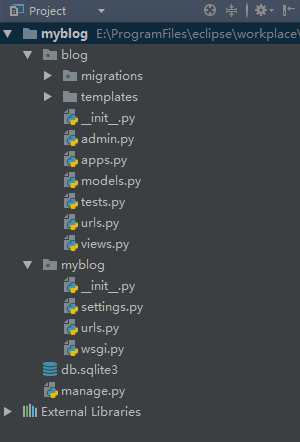

Django是一个开放源代码的Web应用框架，由Python写成。采用了MVC的软件设计模式，它源自一个在线新闻Web站点。
安装django
pip install Django == 1.10.5
创建项目
django-admin startproject proect_name
执行完这条命令后，会自动创建一个django项目，项目目录下会有许多自动生成的文件，目录列表见图
创建app
django是以app来划分各功能需求，
python manage.py startapp blog
简单介绍一下各文件的作用
manage.py文件
项目的管理文件，负责各种命令的执行，如：
python manage.py runserver
之类的
myblog文件夹下
- __init__.py
声明模块的文件 - settings.py
项目的总的配置文件，配置项目的数据库信息（DATABASES字段），Templates文件路径信息（TEMPLATES字段），语言设置、时间设置等（LANGUAGE_CODE等字段），APP声明（INSTALLED_APPS字段） - urls.py
URL配置文件，注意正则表达式的应用，以及一定要在每个url的后面加一\ wsgi.py
Python与Web服务器之间的接口blog文件夹（app）
migrations文件夹
数据库操作,数据移植，自动生成- templates文件夹
模板文件，存储html文件 - admin.py
后台管理系统管理配置文件 - apps.py
自己应用的一些配置 - models.py
数据模块，在里面生成类，对应数据库中的表，使用ORM框架 - tests.py
自动化测试模块 - urls.py
自己app内的url配置 - views.py
执行相应的代码，代码逻辑处理的主要地点，项目大部分代码在此编写